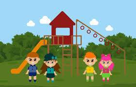

Introducción
Hola amigos y amigas!!!
Bienvenidos a la unidad de la nutrición y la salud, esperamos que aprendas mucho. Aquí encontraras una variedad de información muy interesante y divertida, la nutrición es un proceso muy complejo que comprende diversas etapas e involucra varios aparatos del cuerpo humano para obtener la energía necesaria para desarrollar nuestras actividades diarias. Tener hábitos saludables de alimentación y ejercicio te previene de muchas enfermedades.
